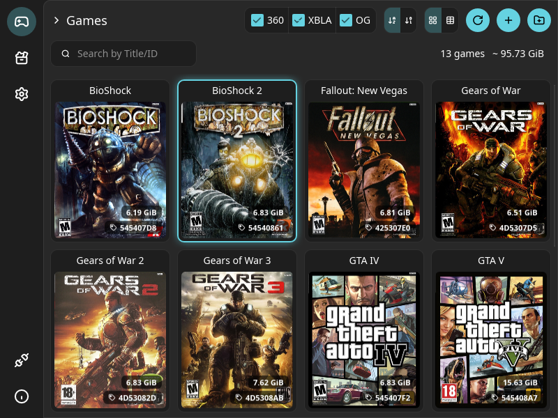

Start with a console that has never been touched. This little app unlocks it, then fills it with your games — box art, add-ons and multi-disc titles handled for you. You never have to learn how any of it works.
Free and open source. Windows, macOS and Linux. Nothing to install alongside it.

Any one of them. Already unlocked, or straight out of the cupboard as it left the factory — the app handles both.
This is what unlocks the console. A small stick will do the job — but a USB hard drive does it and holds your games too.
Either that USB hard drive, or a hard drive inside the console. Games are 6–8 GB each, so a stick won't hold many.
The disc images of the games you want on there. ISO files, arcade downloads, whatever you have.
The app asks where you're starting from and takes you the rest of the way. Skip straight to the last step if your console is already unlocked.
The first time you open the app, it asks one question: is your console already unlocked, or is it still exactly as it left the factory?
From your answer it lays out the path in front of you, one screen at a time. There's no guide to find, no forum thread to decode.
Plug in a USB drive and click once. The app downloads everything the console needs, puts it on the drive in the right shape, and shows you what to do on the console itself.
Your 360 boots from it, and comes back with a proper home screen that can play games from a hard drive.
Click the plug icon at the bottom left and pick your console or a USB drive. Plugged-in drives appear in a list; the console just needs the IP address shown on its own screen.
The app then looks at what's already there and shows you where it plans to put things. Click Confirm — it remembers, and won't ask again.
Press +, or drag your files onto the window. Each one gets converted to the format the console expects and copied across, one after another, while you watch the queue.
Pick whichever suits your setup. The app works the same in all three.
Plug a USB stick or drive into your computer, fill it here, plug it into the console. No network involved.
SimplestLeave the console on and send games to it over Wi‑Fi or Ethernet, from the sofa. Nothing to unplug, nothing to carry.
Most convenientTake the drive out of the console, connect it to your computer and fill it directly. Much faster for a big library — but it asks more of you.
ExperimentalThis is the stuff people usually spend an evening reading forum threads about. You don't have to.
Covers are fetched and kept, so your console's home screen looks like a proper shelf instead of a list of codes.
Titles like GTA V that came with an install disc: hand over both files, it sorts out what goes where.
Extra content bundled with a game gets installed alongside it, so anything it unlocks is unlocked when you play.
Small downloadable titles usually come as a .zip or .7z. Drop the archive in as it is — no unpacking first.
Your old first-Xbox discs work on the 360, and this app prepares them the same way it does 360 games.
The list you see is what's really on the console. Delete something here and it's gone from there, cleanly.
One file. No installer to click through, no account, no toolbar.
Windows 10 and later. Grab the file ending in windows-x64.exe and double-click it.
macOS 10.14 and later, Intel and Apple Silicon. Open the DMG and drag the app to Applications.
Download for macOSGet the .AppImage, make it executable, run it. Works on any recent distribution.
Yes — that's the starting point the app is designed for. A console straight from the factory can only run discs, so before anything else it has to be unlocked. The app makes the USB drive that does it (it uses the well-known ABadAvatar route, and installs the Aurora home screen), tells you which buttons to press on the console, and only then moves on to your games.
It's software only — nothing is soldered, opened or permanently altered, and the app never formats or repartitions a disk. Two things are worth knowing all the same: it ends your warranty, and a console modified this way must stay off Xbox Live, because Microsoft bans them. Keep it offline and it will happily play everything on its hard drive for years.
In one of two places, and you need to have decided which before you start. Either on a USB hard drive plugged into the console — the very same drive you used to unlock it, as long as it's a real hard drive and not a small memory stick — or on a hard drive inside the console. Several 360 models were sold with no internal drive at all, so check the side of yours.
Budget 6 to 8 GB per game: a 16 GB stick holds two. USB drives have to be formatted as FAT32, and the app tells you plainly when one isn't.
Yes — take the hard drive out of the console and connect it to a SATA port or a USB adapter. It's by far the quickest way to fill a big library, but it's the one path marked experimental, and it asks a little more of you.
Your computer can't read an Xbox 360 drive: it won't appear in Explorer or Finder, and the app has to talk to the disk directly. That needs permission to do so. On Windows it's simple — right-click the app and choose Run as administrator, and the drive shows up in the list. On macOS and Linux there's one command to run first; the README explains each system step by step.
One rule above all: when your computer offers to format, initialise or repair that drive, always say no. It doesn't recognise the Xbox's filesystem and accepting wipes every game on it. Back the drive up before your first write.
No. That's the whole point. You give it a file, it works out what the file is and does the right thing with it. Those words appear in the app only where they help you recognise something — never as a decision you have to make.
That part is up to you, and it's your responsibility. The app ships with no games and downloads none — it takes the disc images you already have and prepares them for the console. It exists so you can play the games you own without wearing out twenty-year-old discs; what you feed it is between you and your conscience.
It's free, open source, and there's no catch — one person builds it in the evenings between freelance work and two small daughters. If it saves you a night of head-scratching, a small donation keeps it going.
The two everyday routes — over the network, or through a USB drive — are the safe, well-trodden ones: the app writes files and nothing else. The only path that carries real risk is working on the console's own drive directly, which is why it's marked experimental and gets its own answer above.
Not at all. It's an independent project, not affiliated with or endorsed by Microsoft, and it's meant strictly for legal backups of games you own.
Download it, plug in your console, and have your library back this evening.
Get TinyXbox360BackupManager